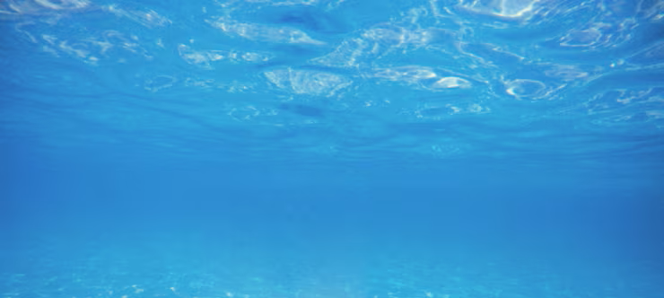

<a-scene embedded arjs="sourceType: webcam; debugUIEnabled: false;" 
         renderer="logarithmicDepthBuffer: true; precision: medium;"
         light="defaultLightsEnabled: false">
  
  <a-assets>
    
    
    
    
     
    <video id="Fish2Video" src="video/C_Chaetodon wiebeli.mp4" 
           autoplay="true" loop="true" muted="true" playsinline crossorigin="anonymous"></video>
  </a-assets>

  <a-marker preset="hiro" marker-video-auto>
    
    <a-image src="#backgroundC1" position="0 0 0" width="3.6" height="2.8" rotation="-90 0 0"></a-image>
    <a-image src="#backgroundC2" position="0 0.1 0" width="3.0" height="1.0" rotation="-90 0 0" transparent="true"></a-image>
    <a-image src="#seawead1" position="-0.2 0.3 0" width="3.5" height="2.5" rotation="-90 0 0" transparent="true" material="alphaTest: 0.5; depthWrite: false;"></a-image>
    <a-image src="#coralpink" position="0.6 0.35 0" width="3.5" height="2.5" rotation="-90 0 0" transparent="true" material="alphaTest: 0.5; depthWrite: false;"></a-image>

    <a-entity position="-0.5 0.5 0"
              animation="property: position; to: 0.8 0.5 -0.2; dur: 7000; dir: alternate; loop: true; easing: easeInOutSine">
      <a-video src="#Fish2Video" 
               width="1.2" 
               height="0.9"
               rotation="-90 0 0"
               material="shader: chromakey; color: #00FF00; colorTolerance: 0.2; transparent: true; depthWrite: false;">
      </a-video>
    </a-entity>

    <a-entity position="-0.2 0.6 0"
              animation="property: position; to: 0.5 0.6 0.4; dur: 10000; dir: alternate; loop: true; easing: easeInOutQuad">
      <a-image src="#Fish1" width="0.5" height="0.75" rotation="-90 0 0" transparent="true" material="alphaTest: 0.5; depthWrite: false;"
               animation__float="property: position; to: 0 0.1 0; dur: 3000; dir: alternate; loop: true; easing: easeInOutSine"
               animation__rotate="property: rotation; to: -90 0 6; dur: 3500; dir: alternate; loop: true; easing: easeInOutSine">
      </a-image>
    </a-entity>

  </a-marker>

  <a-entity camera></a-entity>
</a-scene>
